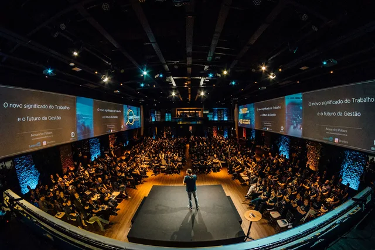

Business tour
It all starts with a visit. Teams step onto the production floor, see the workflow first-hand and talk directly to the people running it. The enterprise opens up its systems and points out exactly where automation is needed.